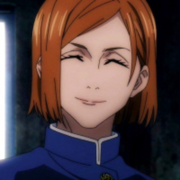

Sobre
Jujutsu Kaisen é um mangá japonês escrito e ilustrado por Gege Akutami, serializado na Weekly Shōnen Jump desde 5 de março de 2018. Os capítulos individuais são compilados em volume tankōbon, e publicados pela Shueisha desde julho de 2018. A série é licenciada e publicada no Brasil pela editora Panini.
A história de Jujutsu Kaisen conta a saga de Itadori Yuji, um jovem estudante que ganha poderes sobrenaturais após ingerir o dedo de sukuna, o demônio rei das maldições. A maioria dos fãs de Jujutsu Kaisen já está acostumada a ouvir sobre o que a saga se trata.
Gege Akutami nasceu na província de Iwate em 26 de fevereiro de 1992. Akutami mudou-se para Sendai, na província de Miyagi, na quinta série. Akutami começou a desenhar mangá imitando um amigo, o que os inspirou a se tornarem artistas profissionais de mangá. Akutami nomeou Tite Kubo como uma influência em seu trabalho depois de ler Bleach na quarta série, além de Hunter x Hunter e Neon Genesis Evangelion entre outras obras. Em 2014, Gege Akutami começou a trabalhar como assistente de Yasuhiro Kanō em Kiss x Death.
Espíritos Amaldiçoados são a forma “consciente” que a energia amaldiçoada de algum lugar toma para si depois de um certo período. Essa energia emana das emoções negativas dos seres humanos – ou seja, é algo natural – e pode ser manipulada por feiticeiros jujutsu ou se transformar nesses espíritos.
Juryoku「呪じゅ力りょく, Energia Amaldiçoada」 A energia amaldiçoada nasce de emoções negativas, como tristeza e raiva. Esses sentimentos negativos são comuns na sociedade humana, então quase todos possuem energia amaldiçoada. Se essa quantidade for superior a um determinado grau, concede à pessoa a capacidade de ver maldições, o que é muito raro entre a raça humana.
Personagens Principais

